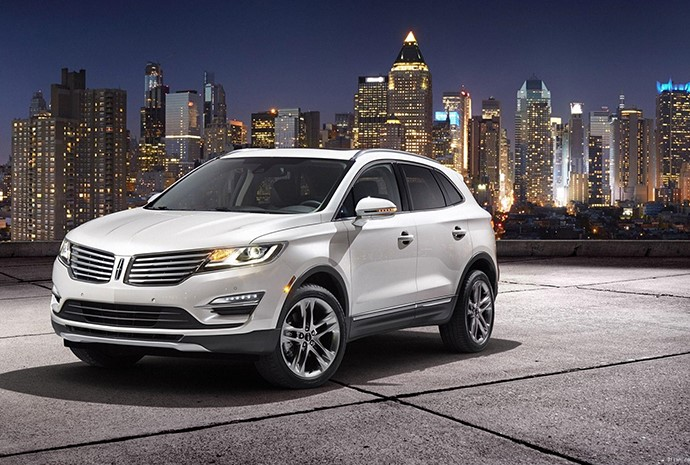

中国经济水平越来越好，曾经遥不可及的汽车梦，逐渐走进了大众家庭，真可谓“旧时王谢堂前燕，飞入寻常百姓家”。然而，对于很多人来说，都是第一次接触买车这个事情，市场上又有这么多的车型款式，不禁让人头晕目眩。现在汽车对于普通家庭已经不是什么新鲜物件，越来越多的人在考虑入手人生的第一辆车。不过，买汽车毕竟不是买馒头买菜，除了思聪这样的超级富豪，对于大多数人还是一个慎重的选择。尤其是新手，初次买车都比较激动，很容易就被套路了。第一辆车究竟怎么选呢？下面二师兄教你新手购车八步曲，相信会让准备买车的你，买的顺心，用的舒心。

第一步：根据购买能力确定价位
并不是每个人都是思聪，我们买车的各位看官，还是需要首先权衡一下自己的经济实力，选择合理的汽车价位。根据汽车之家等网站，通常将汽车分为五万以下、五万至十万、十万至十五万等等不同的档次，我们可以根据不同的价格区间，首先确定大概的车型范围。
第二步：确定购买汽车类型
买车的用途决定了所选择的车型。确定了买车是家用还是旅游还是商用，这样算下来一圈可以在心中淘汰了很多车。如果商务的话，则购买中大型轿车较为合适，而家用的话购买紧凑型轿车或者SUV比较适宜，拉货的话则首选MPV和皮卡。否则，则可能张冠李戴，买了车之后用着也不顺心。
第三步：选择喜欢的车系
当我们选择了合适的车型之后，又有一个问题摆在我们面前，同样的车型，依然有很多的派系，有欧美系、日韩系、自主系等等，这怎么选呢？二师兄告诉大家，每个车系都有自己的特点，总的来说，欧美的品牌通常以扎实著称，而日韩的品牌则是经济省油，自主系则是以价格低廉见长。
第四步：选择喜欢的品牌
根据购买能力、需求车型和看好的车系，其实范围已经缩小了很多了，接下来就要选择比较喜欢的品牌。其实，选择一个品牌，一方面要看这个品牌的积淀和口碑，另一方面，还要看各位看官对这个品牌的认可程度。好比说，我就认定了奔驰可以帮我找到女朋友，那么估计卖房也要买一辆啦。
第五步：选择合适的车型
同一个类型、同一个品牌，往往也会有很多不同的车型可供选择，如大众旗下的紧凑型车，就有速腾、朗逸、捷达、宝来等数种之多。这些车型之间，往往差别比较细微，这就需要各位看官实地考察，主要考察每一个车型的动力、空间、外形等信息，选择最合适的车型，作为我们日后的伙伴
第六步：选择合理的配置
汽车上的配置也可谓是五花八门，简直有点“乱花渐欲迷人眼”的感觉，各种高科技都往车上匹配。其实，在二师兄看来，除了必要的舒适性和安全性配置，如安全气囊、EPS等，其他有如自动泊车、遥控开车等，都是可以根据自己喜好进行选配，并不是最高科技的就是最好的。
第七步：选择优良的4s店
4S店是我们与自己爱车接触的第一步，从我们选好自己喜欢的车型之后，看车、试车、买车、保养、售后都离不开4S店。选择4S店的时候，强烈建议询问一下购买过该品牌汽车的朋友，选择合适的4S店，同时，要把购车条款等，仔细阅读，确保万无一失。
第八步：和销售人员谈妥价格
汽车的价格其实是在指导价格上会有比较大的浮动的，所以在购车是，可以发挥自己的特长，在价格上好好谈一下。同时二师兄提醒，一般不要接受4s店推送的附加产品，因为这些在外面的汽配城都可以家装而且价格比4s店便宜很多，你只要4s店把实实在在的车的价格给足优惠就好。